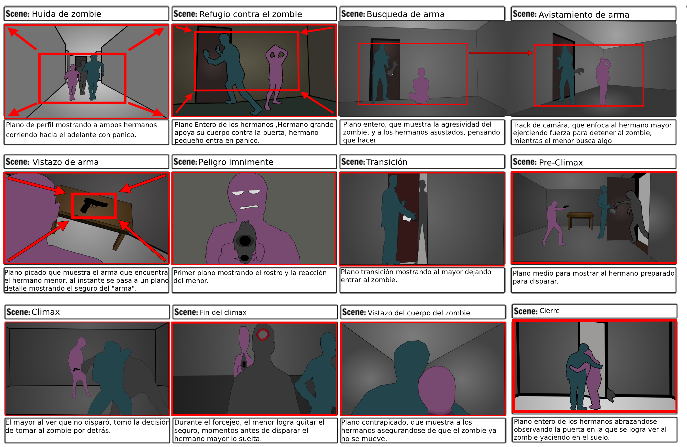
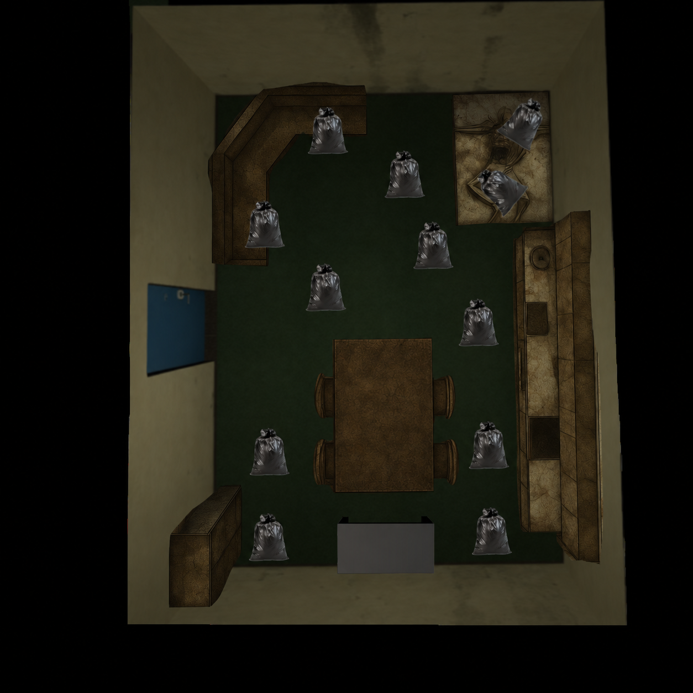
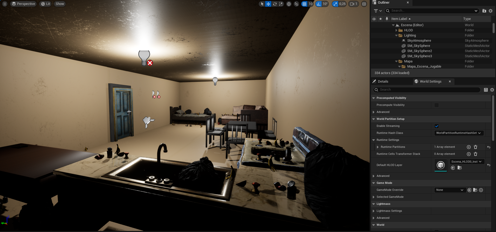
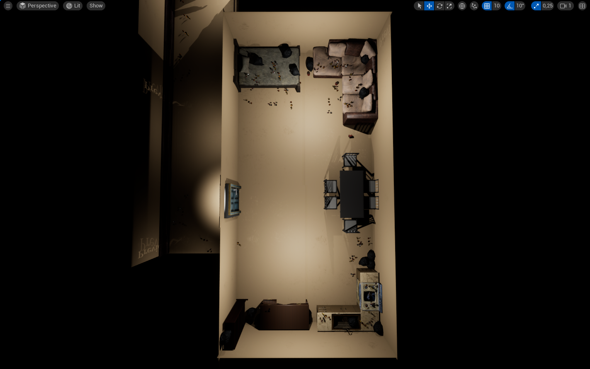
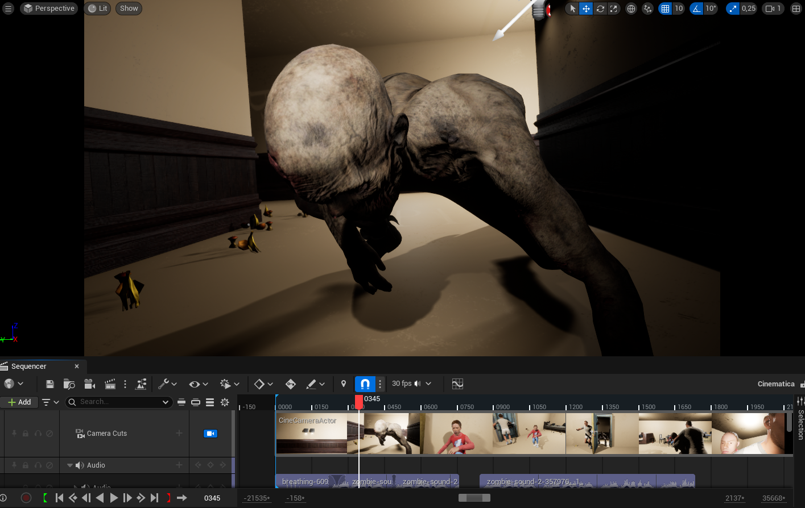
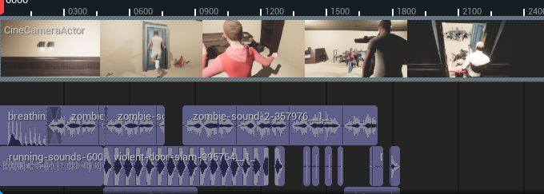

Unreal EngineMotor y secuenciación cinematográfica
Producción grupalCon responsabilidades distribuidas
Mi rolStoryboards, cámaras finales, iluminación, integración de animación y montaje
01 / Concepto
Una huida que termina en enfrentamiento
Dos hermanos escapan de un zombie y encuentran refugio en una habitación. Allí descubren una pistola y deciden enfrentarse a la amenaza, pero el arma se atasca en el momento más peligroso.
Mientras el hermano mayor intenta contener a la criatura para ganar tiempo, el menor consigue finalmente disparar. Tras superar el enfrentamiento, ambos pueden recuperar el aliento.
La cinemática propone una secuencia breve de persecución, suspenso y resolución. El proyecto se desarrolló en equipo y utilizó recursos existentes combinados con trabajo propio de puesta en escena, animación e iluminación.
02 / Imágenes clave, inspiración y atmósfera
Del storyboard a la pantalla
La planificación visual pasó por dos versiones. El primer storyboard reunía la historia en ocho viñetas; posteriormente, se amplió a doce para distribuir mejor las acciones y ajustar los encuadres.
Storyboard V01 · ocho planos con los acontecimientos principales

Storyboard V02 · doce planos, con más espacio para las reacciones y el enfrentamiento

Imagen generada con IA y editada en Photopea para planear la distribución de la habitación (no conservo la versión original)
03 / Iluminación y atmósfera
Una atmósfera apagada, lograda a medias
La iluminación se resolvió con luces spot y luces puntuales (point lights). La intención era que la habitación se sintiera apagada y opresiva; no se consiguió del todo, pero la iluminación cumplió su función: mantiene legibles las acciones y acompaña la tensión de la escena. Además, el proyecto no modificó de forma general los materiales de los assets externos, para concentrar el tiempo en las tareas prioritarias.

La habitación desde la cámara de trabajo

Vista cenital de la habitación
04 / Zombie mood
La amenaza en primer plano
Una de las decisiones de dirección más importantes fue añadir un plano muy cercano del rostro del zombie.
Este plano no estaba contemplado en la planificación inicial; surgió después de revisar el montaje: el equipo consideró que hacía falta un instante adicional de tensión. La cercanía del encuadre y la música de terror ayudaron a enfatizar la presencia de la criatura y crear suspenso antes de continuar la acción.
Se utilizó el modelo Romero, obtenido de Mixamo, junto con animaciones y personajes humanos integrados en Unreal Engine.

Primerísimo primer plano del zombie, con parte de Sequencer visible
05 / Flujo de trabajo
Planificar, adaptar, resolver
El equipo comenzó con una carta Gantt y una división de tareas. Durante el desarrollo surgieron necesidades técnicas y cambios de disponibilidad, por lo que la organización real se apartó de la planificación. La carta Gantt debe entenderse como referencia inicial, no como registro definitivo de responsabilidades.
01
Preproducción
Escaleta, dos storyboards, selección de personajes y organización visual de la habitación. Se utilizó una imagen generada con IA y editada en Photopea para planear la distribución.
02
Integración técnica
Ante problemas con las animaciones de Mixamo, el equipo buscó soluciones; terminé integrándolas yo con los MetaHumans y el zombie, y animé manualmente las expresiones faciales.
03
Puesta en escena
Montaje del nivel, blocking inicial de cámaras por un compañero, cámaras definitivas e iluminación a mi cargo, sincronización temporal de audio y exportación final.

Sequencer: cámaras y línea de tiempo del montaje
La planificación fue una guía de partida; el resultado final exigió reorganización, colaboración y decisiones cinematográficas que surgieron durante el desarrollo.
MetaHumans: Emory y KodaPersonajes humanos utilizados
Mixamo: RomeroModelo del zombie y animaciones de Mixamo
07 / Créditos
Una producción de equipo
Responsabilidades documentadas según el trabajo realizado, que no siempre coincidió con la distribución inicial de la carta Gantt.
Javier Montero
Storyboards, selección de personajes, integración de animaciones, animación facial manual, montaje del nivel, cámaras finales, iluminación, sincronización de audio y exportación.
Arturo Toro
Efectos visuales y selección de personajes.
Carlos Sandoval
Blocking inicial de cámaras, limpieza y pulido de animaciones.
Fabián Zapata
Selección de props, intento inicial de integración de animaciones y animatic.
Felipe Nuñez
Desarrollo de la sección jugable previa que permitía activar la cinemática.
La banda sonora incluye efectos de audio obtenidos de fuentes externas y la canción «Un beso y una flor», interpretada por Nino Bravo. La mención de la canción no implica titularidad ni licencia sobre ella.
Documentación completa
Explorar el proceso en detalle
Documento PDF · 8 páginas
Niño Mundial Z — Documentación final
Concepto, storyboards, decisiones visuales, flujo de trabajo, herramientas y créditos. El PDF contiene imágenes del proceso y las contribuciones del equipo.